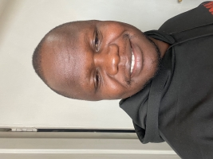

Okwir Samuel | WDD 130

Hello! My name is Okwir Samuel, and I am from Uganda, proudly known as The Pearl of Africa. I am a dentist by profession, but I prefer to call myself a smile artist because I love making people laugh and smile. I enjoy seeing people with beautiful, confident smiles, and I find great satisfaction in helping my clients restore their smiles and confidence. I am currently a student at BYU-Pathway Worldwide, studying Software Development. I am passionate about learning programming and web design, and I look forward to developing skills that will help me create useful and user-friendly websites. I am very excited to be part of this amazing WDD 130 class and look forward to learning, growing, and sharing experiences with my classmates.